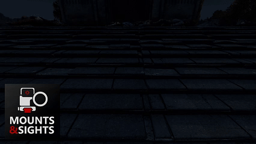

Mounts & Sights QR Code
You are probably here because you scanned one of the QR codes present in the Mounts & Sights mod for DayZ (Steam Workshop page).




If you are enjoying the mod and want to foment further development, consider making a donation:
If you’ve been redirected here from a server that is not using a mod called “Mounts & Sights”, it means that you are playing in a server that is using a illegal version of the mod. Please report it in the comment section of the Steam Workshop page. Thank you.